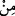

kapanın!
“Onu tamamlayıp,…” Yâni ona bir insan sûreti kazandırıp özel bir cild yapısı
bulunan (beşerî) bir yaratılışa sâhip kıldığım zaman … ya da tıpkı dört aylık bir ceninde
olduğu gibi doğal vasıflarını eşit bir şekilde dağıtarak bedeninin tüm parçalarını
eşitlediğim zaman...
Çünkü ruhun üflenebilmesi için böyle bir eşitlik veya düzenlemenin mutlaka yapılmış
olması gerekir. Nitekim hakikat ruhunun üflenebilmesi için de şerîat ve tarikatın denk ve
eşit olması gerekmektedir. Bu nokta çok iyi anlaşılmalı ve muhafaza edilmelidir!
Bu sebepledir ki Necmeddîn Kübrâ et-Te’vîlât’ında der ki: Onun şeklini ilâhî hazrete
izâfe edilen ruhun üflenmesini kabule elverişli bir şekilde düzenleyip ona ruhumdan
üflediğim zaman…
“İçine de” onun istidâdını kemâle erdirip sâyesinde hayat bulacağı “ruhumdan” -ki
bu ruh kendi ‘emr’imdendir- “üfürdüğüm” yâni ruhu ona izâfe ettiğim “zaman,”
() yâni üfleme, rüzgârı (rîh) içinde tutabilecek ve dolabilecek bir cismin içine
rüzgâr vermektir. Ortada ne üfleme fiili ne de üflenen şey vardır. Bu ifâde, sadece
bilfiil hayatın kendisi sâyesinde gerçekleştiği şeyin hayatı kabûle elverişli bir maddeye
izâfe edilişini anlatan bir temsildir.
Cenab-ı Hakk’ın bu ruhtan, bizzat kendisine izâfetle ‘ruhum’ diye bahsetmesi, ya
şerefli ve temiz oluşundan ileri gelmiştir ya da tıpkı ‘Allah’ın evi’ ve ‘Allah’ın devesi’
izâfetlerinde olduğu gibi, büyüklüğünü ifâde etme amacına mâtuftur.
Bu îzahla Hulûliyye’nin () “ruhumdan” ifâdesindeki () ekinin parçalık
(teb’îzıyye) anlamında olduğuna ve buna bağlı olarak ruhun Allah’ın bir parçası
olduğuna ilişkin görüşlerinin ne kadar fâsid olduğu ortaya çıkmış olur. Çünkü Allah
Teâlâ’nın bu ruh gibi bizzat kendi parçalarından olan bir ruhu yoktur; O’nun ruhu
Rahmânî nefesinden ibârettir. Ayrıca şu da bir gerçektir ki bir parçası olan herşey hadd-
i zâtında mümkün ve hâdis olan bir varlıktır. Oysa Allah imkân ve hudûs gibi
eksikliklerden münezzehtir.
Kâdî Iyâz (r.h.) Şifâ-i Şerif adlı eserinde der ki: Bârî Teâlâ hazretlerinin herhangi bir
şahsa hulûl ettiği inancında olan herkes tüm müslümanların icmâı ile kâfirdir.
Râğıb der ki: Ruh, nefsin diğer adıdır. Şöyle ki: Nefis ruhun bir parçasıdır. Öyle ise
nefse “ruh” denmesi, bir türe “cins”inin adının verilmesine benzer. İnsana “hayvan”
(canlı) denmesi de böyledir. Ruh canlının, sâyesinde hayat bulduğu ve hareket etme,
fayda sağlama ve zarar savma kabiliyetinin kendisine muhtaç olduğu parçasına isim
olarak verilmiştir. “De ki: “Ruh, Rabbimin bileceği bir şeydir.” (el-İsrâ 17/85) ve
‘ona ruhumdan üflediğim zaman’ âyetlerinde geçen ruh bu ruhdur. Allah’ın bu ruhu
kendisine izâfe etmesi, bir sâhiplik izâfesidir. Fakat O, herşeyin sâhibi olmasına
rağmen, özellikle ruhu kendisine izâfe etmesi, onun şeref ve yüceliğini göstermek
amacına mâtuftur. Tıpkı “Hani biz İbrahim’e, Kâbe’nin yerini, ‘Bana hiçbir şeyi
ortak koşma; evimi, tavaf edenler, namaz kılanlar, rükû ve secde edenler için